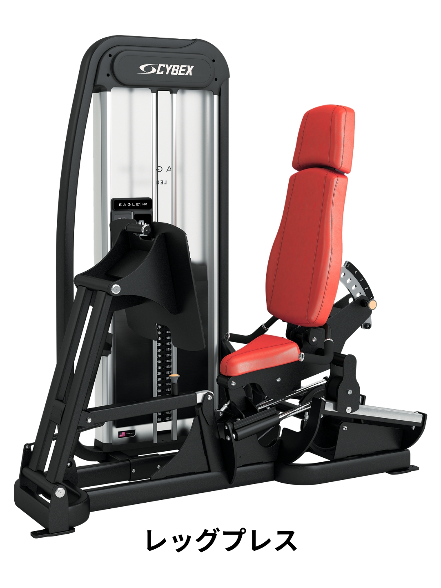
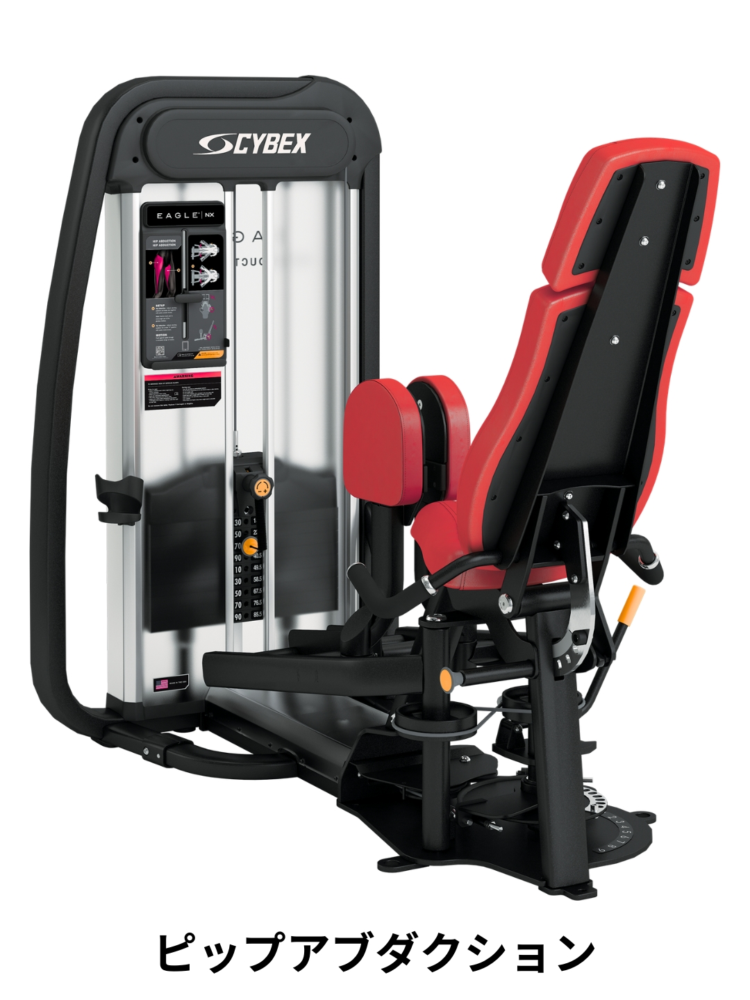
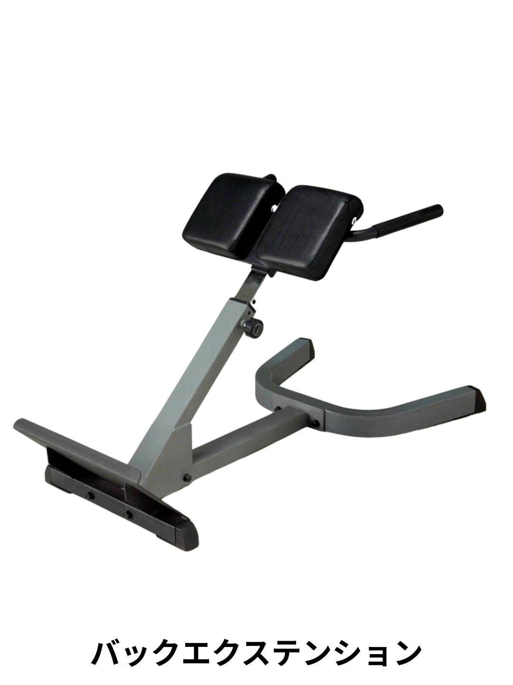
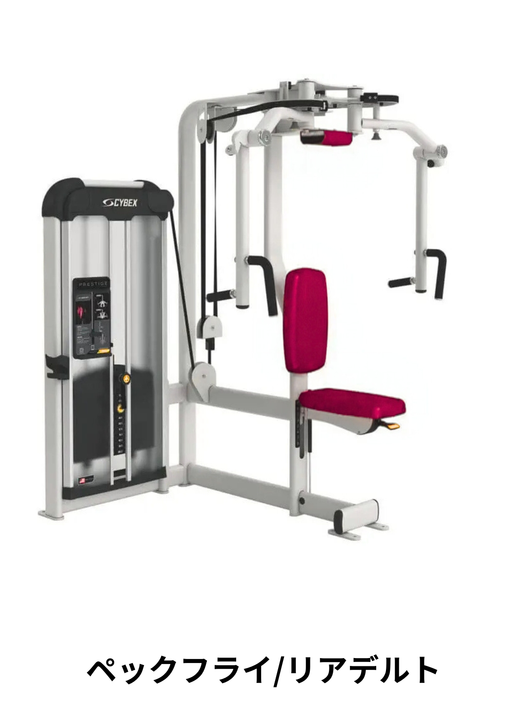
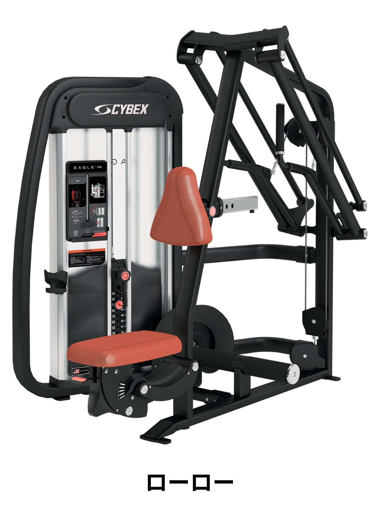
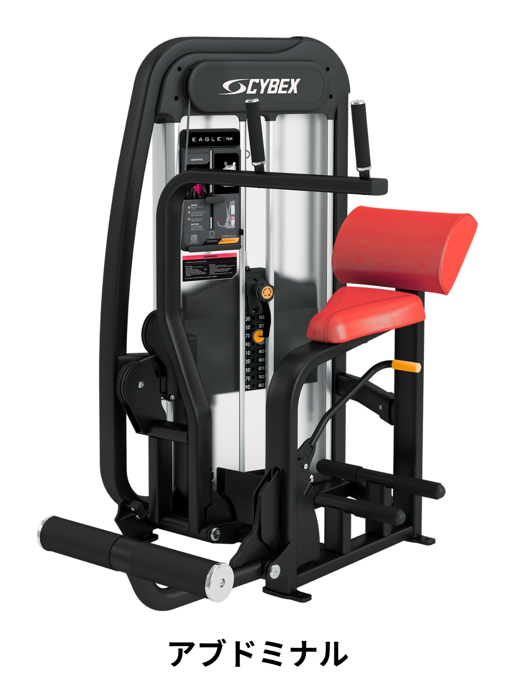

1 レッグプレス
下半身

設定
ピン：2番
実施内容
- 片足ずつ × 2セット
- 両足 × 2セット
ワンポイント：
背中をシートにしっかりつけて行いましょう。
2 アダクション / アブダクション
お尻・内もも
内もも

お尻
実施内容
- アダクション（内もも） × 3セット
- アブダクション（お尻） × 3セット
ワンポイント：
内ももとお尻、それぞれのマシンを使い分けて行います。
3 背筋台（バックエクステンション）
背中

設定
「2番」が見える位置で固定
実施内容
- 2セット
ワンポイント：
地面と体が平行になるぐらいまで起き上がりましょう。
4 リアデルト / ペックフライ
胸・肩

設定
椅子の高さ：一番上
実施内容
- リアデルト（肩の後ろ） × 3セット
- ペックフライ（胸） × 3セット
ワンポイント：
ペックフライは胸をしっかり立てて、肩を耳の後ろまでしまうイメージで行いましょう。
5 ローロー
背中

設定
椅子の高さ：一番上
実施内容
- 3セット
ワンポイント：
肩のポジションを意識して行いましょう。
6 アブドミナル（お腹）
時間があれば

実施内容
- 2セット
ワンポイント：
余力があれば行いましょう。